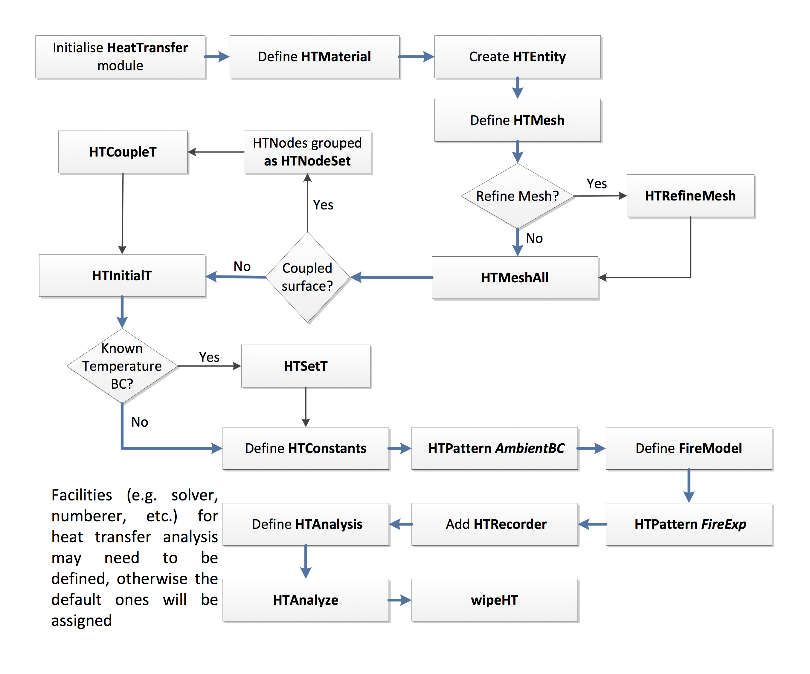

Heat Transfer in OpenSees
Introduction
Tcl command library has been added to facilitate the script based usage of OpenSees. Since the fire and heat transfer modules were developed, it is desirable to have corresponding Tcl commands for performing heat transfer analyses in OpenSees. This will significantly reduce the complexity in constructing a heat transfer model without requiring knowledge of C++ programming as a user.
Heat transfer analysis in OpenSees is based on the finite element method to solve the transient governing equations. Therefore a mesh tool becomes necessary to discretise the model into nodes and elements.
Heat Transfer Workflow
For users who want to conduct heat transfer analysis with OpenSees, it is necessary to follow the flowchart shown in Figure 1 when organising the Tcl commands and creating the script.
First and foremost, the module is activated by HeatTransfer to enable the application of the relevant commands and facilities. Notice that the argument following the HeatTransfer command shall define the number of dimensions that can be either 1D or 2D or 3D, which is useful in the cases that dimensional reduction is applied.
- HTMesh shall be in association with HTMaterial and HTEntity, which accepts a wide range of entity types that are linked to the subclasses in the SimpleEntity family. The available types of entities and their usage can be found in detail in the later section. Seed distribution for the mesh can be refined if necessary by providing a vector containing element size and number. The final mesh is completed once HTMeshAll is detected.
- This is followed by a few commands to declare the appropriate boundary conditions, as either fixed (HTSetT) or coupled (HTcoupleT) temperatures. Constants shall be defined before the heat flux boundary conditions are specified which list the coefficient of convection to or from ambient, ambient air temperature and the resultant emissivity of the fire plume.
- HTPattern is then used in association with AmbientBC for describing the heat loss to the ambient environment, while the keyword FireExp is to invoke fire exposure defined as a specified fire model ranging from uniform fire action to localised fire exposure. Before proceeding to heat transfer analysis definition, heat transfer results can be requested via HTRecorder command.
- Heat transfer analysis is finally completed after receiving HTAnalyze and thereafter the model can be wiped out using command wipeHT.
HeatTransfer script demo
HeatTransfer 2D;
HTMaterial CarbonSteelEC3 1;
HTMaterial ConcreteEC2 2 0.0;
HTEntity Isection 1 0.0 0.2 0.4 0.20 0.02 0.02;
HTEntity Block 2 0.0 0.45 0.6 0.1;
HTMesh 1 1 1 -phaseChange 0 -MeshCtrls 0.01 0.005 0.005 0.0198;
HTMesh 2 2 1 -phaseChange 1 -MeshCtrls 0.02 0.02;
HTRefineMesh -Entity 2 -SeedTag 1 4 -space 0.02 10 0.01 9 0.005 4 0.01 9 0.02 10;
HTMeshAll;
SetInitialT 293.15;
HTNodeSet 1 -Entity 1 -face 12;
HTNodeSet 2 -Entity 2 -face 1 -locx -0.1 0.1;
HTCoupleT -NodeSet 1 2;
HTConstants 1 4.0 293.15 0.7 5.67e-8 0.7;
HTConstants 2 25.0 293.15 0.7 5.67e-8 0.7;
HTPattern AmbientBC 1 {
HeatFluxBC -HTEntity 2 -faceTag 4 -type ConvecAndRad -HTConstants 1;
}
FireModel standard 1;
HTNodeSet 3 -Entity 2 -Locx -0.3 -0.1;
HTEleSet 1 -Entity 2 -NodeSet 3 -face 1;
HTNodeSet 4 -Entity 2 -Locx 0.1 0.3;
HTEleSet 2 -Entity 2 -NodeSet 4 -face 1;
HTPattern fire 2 model 1 {
HeatFluxBC -HTEntity 1 -face 1 4 5 6 7 8 9 -type ConvecAndRad -HTConstants 2;
HeatFluxBC -HTEleSet 1 -face 1 -type ConvecAndRad -HTConstants 2;
HeatFluxBC -HTEleSet 2 -face 1 -type ConvecAndRad -HTConstants 2;
}
HTRecorder -file temp0.out -NodeSet 1;
HTRecorder -file temp1.out -NodeSet 2;
HTAnalysis HeatTransfer
HTAnalyze 20 30;
wipeHT;
This page is created by Liming Jiang, 2016